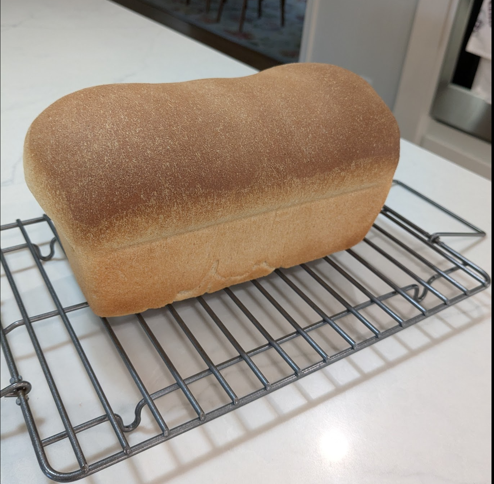

Basic Bread

Ingredients
- 410 g bread flour
- 240 ml warm water
- 70 g sugar
- 7 g active dry yeast
- 5 g salt
- 9 g vegetable oil
Directions
- Stir the sugar and yeast into warm water in a large bowl and proof until the mixture resembles a creamy foam.
- Mix salt and oil into the yeast mixture, then mix flour one cup at a time.
- Knead by hand on a lightly floured surface or with a stand mixer until smooth about 8-10 minutes.
- Place in a well-oiled bowl and turn dough to coat. Cover with a damp cloth and allow to rise until doubled in bulk, about 1 hour.
- Punch dough down, knead for a few minutes, and divide in half.
- Shape the halves into loaves, place into well-oiled 9x5" loaf pans, and allow to rise for 30 minutes or until dough has risen 1" above the pans.
- Bake at 350° for 30 minutes, remove from the loaf pans, and cool on a wire rack
Baking Timeline
| Step |
Direction |
Time (min) |
Notes |
| 1 |
Proof yeast |
5 |
|
| 2 |
Knead |
10 |
|
| 3 |
Proof #1 |
60 |
|
| 4 |
Shape and pan |
3 |
Prheat oven to 350°F |
| 5 |
Proof #2 |
30 |
|
| 6 |
Bake |
30 |
|
| 7 |
|
|
|
The Gumbo Page
Michael Fritsche
mbf@fritsche.org